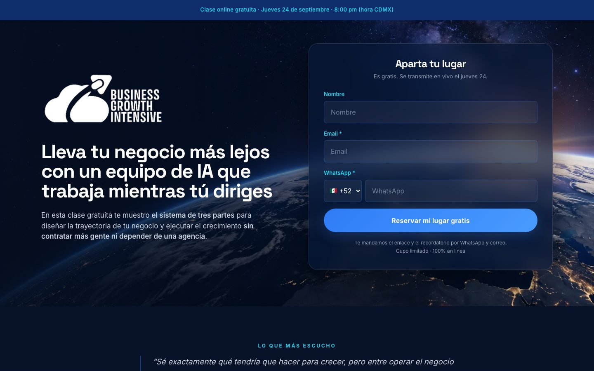
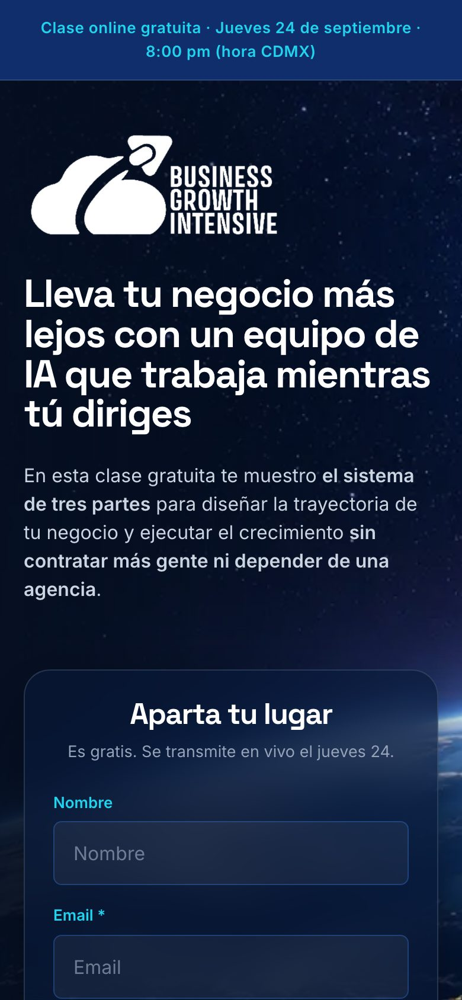
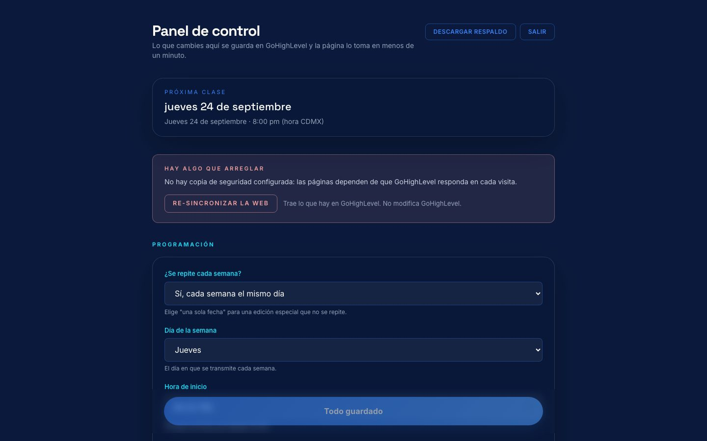
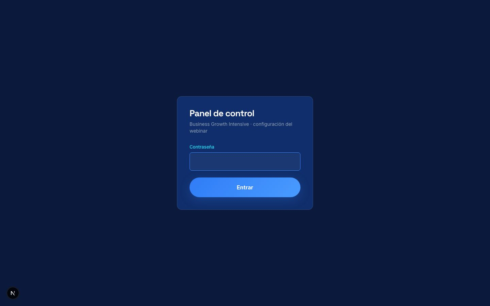
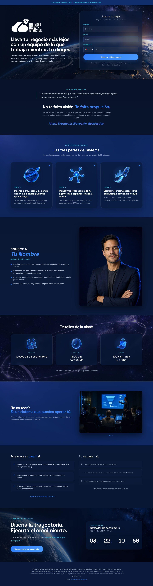
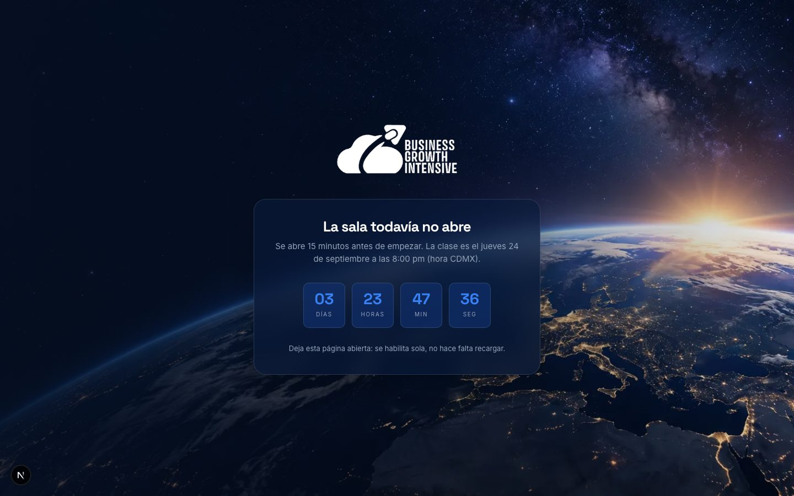
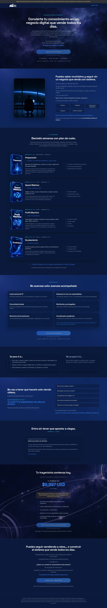
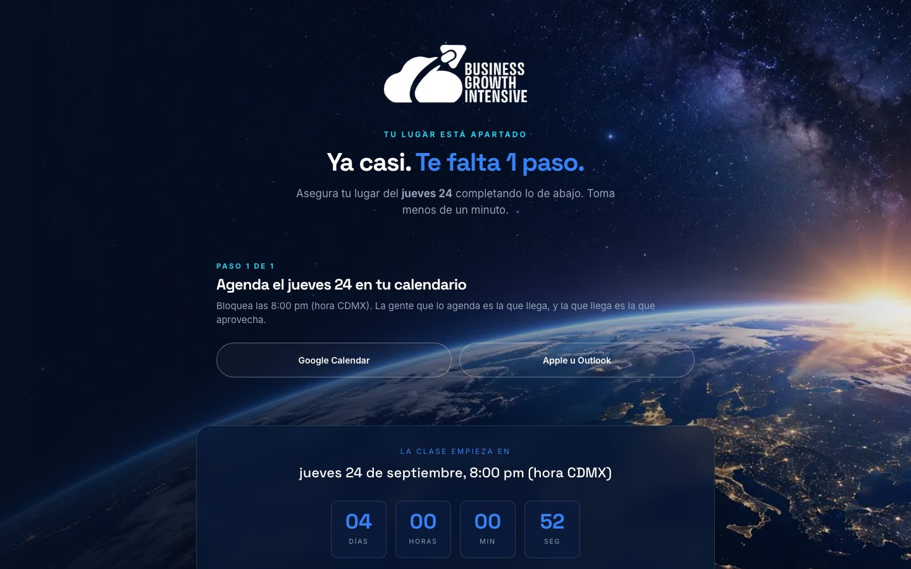

Qué vas a construir
Un embudo completo de webinar en vivo: una página que registra, una que confirma, una puerta que abre sola quince minutos antes de la clase, una oferta que cobra, y un panel desde el que cambias fecha, enlaces y precio sin tocar código. Así se ve, tal cual, en la demo publicada:


La decisión que lo hace distinto: GoHighLevel es la única base de datos. No hay Supabase, no hay Postgres, no hay cron. Los prospectos son contactos de tu sub-cuenta. La configuración vive en los custom values de esa sub-cuenta. Los correos y WhatsApp los manda GHL con sus workflows. El sitio solo hace las páginas y captura.
Y la decisión que hace distinto a este manual: casi todo lo haces desde Claude Code. Crear tu copia, instalar, conectar GHL, escribir el copy, probar el embudo, publicar. Lo que queda fuera son pantallas de terceros que no tienen API para eso: crear una llave, generar un token, poner un registro DNS. En cada módulo verás una caja dorada, Lo único que haces tú, con exactamente eso y nada más.
En GitHub: github.com/davidiriza-lab/plantilla-webinar-ghl. Es un repositorio público y template: no lo modificas, sacas tu propia copia (módulo 03) y trabajas sobre ella. La plantilla es pública; tu copia va privada, porque ahí van a vivir tu copy y tu configuración.
Todos los enlaces, en un lugar
Varios enlaces de este manual abren la pantalla exacta de tu GoHighLevel, de tu sitio o de tu repositorio. Se arman con lo que escribas en tu ficha (Location ID, dominio y repositorio), que se guarda solo en este navegador. Mientras un dato falte, el enlace aparece punteado y te dice cuál.
Lo que necesitas tener antes de empezar
| Cuenta | Para qué | Costo |
|---|---|---|
| Claude Code | Es quien construye. Todo el manual pasa por aquí | Tu suscripción de Claude |
| GoHighLevel, de preferencia con agencia propia | Guardar prospectos, configuración y mandar recordatorios, en una sub-cuenta solo para el webinar | Tu plan de GHL |
| GitHub | Tu copia del código y los despliegues automáticos | Gratis |
| Vercel | Donde vive el sitio | Gratis para empezar |
| Meta Business, con un pixel | Pixel y API de conversiones: es lo que le dice a tus anuncios quién se registró y quién asistió. Sin esto la pauta optimiza a ciegas | Gratis |
Con agencia propia creas una sub-cuenta limpia solo para este webinar, generas tú las llaves sin pedirle nada a nadie, puedes importar snapshots (una sub-cuenta ya armada, con pipeline, campos y workflows) y, el día que quieras montar este embudo para un cliente, es otra sub-cuenta y otra copia del repositorio. Si hoy vives como sub-cuenta dentro de la agencia de alguien más, todo el manual funciona igual; solo que para crear la sub-cuenta o importar un snapshot dependes del dueño de esa agencia.
Cómo leer cada módulo
La demo vive en mibgi.com/plantilla: registro, puerta de la sala, oferta y panel (la contraseña te la damos en la formación). No tiene GoHighLevel conectado, así que el formulario no guarda nada a propósito. Todo lo demás es lo que vas a tener tú, con tu copy.
Cómo se trabaja con Claude Code
Qué es
Claude Code es Claude dentro de tu computadora: lee tu carpeta del proyecto, escribe archivos, corre comandos en la terminal y publica. Le hablas en español, como a alguien de tu equipo. En vez de seguir instrucciones de "abre tal menú, pega tal cosa", le dices lo que quieres y él da los pasos. Cuando va a correr un comando, te lo muestra y espera tu aprobación: tú sigues teniendo el control.
El proyecto trae un archivo CLAUDE.md que le explica a Claude dónde vive cada cosa, las reglas y los comandos. Por eso no tienes que explicarle la arquitectura. Y por eso, si le pides algo que rompe una regla (poner una fecha en el código, mandar un Lead desde la puerta), te lo va a decir.
Las dos ventanas
- El chat de Claude en VS Code (barra lateral). Ahí pegas los prompts de este manual y lees lo que hizo.
- La terminal (abajo). Ahí ves correr los comandos y, a veces, se abre el navegador para que apruebes un inicio de sesión. Casi nunca tecleas tú.
Cómo se pide bien
Claude Code corre en tu computadora. Lo que pegas ahí termina en .env.local, un archivo que nunca se sube a GitHub (está excluido). Si prefieres no pegar un secreto en el chat, escríbelo tú en .env.local con el editor y dile a Claude "ya está en .env.local, sigue".
Lo que no le pidas
- Cambiar fecha, hora, enlaces, precio o pixel editando código. Eso es el panel (módulo 05). Te lo va a decir.
- "Agrega Supabase para guardar los registros". GHL ya los guarda; una segunda base es una segunda cosa que mantener.
- Meter un contador de urgencia falso en la oferta. Puede hacerlo, pero la plantilla no lo trae por una razón.
El ciclo de trabajo, siempre el mismo
- Pides el cambio en el chat.
- Lo ves en tu navegador (
npm run dev, Claude lo arranca). - Le pides "verifica" (
npm run verificar). - Le pides "súbelo": hace commit y push, y Vercel lo publica solo (módulo 11).
Tu taller: VS Code y Claude
Qué es
Para que Claude pueda trabajar necesita tres cosas que solo tú puedes darle: un editor donde vivir (VS Code), estar instalado con tu sesión iniciada, y que tu computadora esté conectada a GitHub y a Vercel. Lo primero lo instalas tú. Lo demás se lo pides.
- Visual Studio Code: descárgalo de code.visualstudio.com e instálalo.
- Node.js (22.18 o más nuevo): nodejs.org, la versión marcada LTS. Si ya tenías uno viejo instalado, instala la LTS encima.
- La extensión Claude Code: ábrela desde ese enlace y toca Install, o búscala en VS Code, Extensiones (Cmd+Shift+X / Ctrl+Shift+X), como Claude Code (de Anthropic). Aparece el icono de Claude en la barra lateral: ábrelo e inicia sesión en el navegador con tu cuenta.
- La terminal de Claude, para que pueda correr comandos. Terminal → Nueva terminal, y pega:
# Mac
curl -fsSL https://claude.ai/install.sh | bash
# Windows (PowerShell)
irm https://claude.ai/install.ps1 | iexCierra y vuelve a abrir la terminal. Con eso Claude ya trabaja. El resto de este módulo lo hace él.
Pídele a Claude
En VS Code, Archivo → Abrir carpeta, y elige la carpeta donde guardas tus proyectos (por ejemplo Documentos/proyectos). Abre el chat de Claude y pega:
Se va a abrir el navegador una o dos veces: entras a GitHub, aceptas; entras a Vercel, aceptas (si tienes verificación en dos pasos, te pide el código). Eso es todo.
Si algo falla
- "command not found: claude". Cierra la terminal y ábrela de nuevo; el instalador agrega la ruta al abrir una terminal nueva.
- Homebrew no está (Mac). Claude te va a dar el comando de brew.sh; pégalo en la terminal y vuelve a pedirle lo mismo.
- Claude no abre el navegador para iniciar sesión. Copia la URL que muestra en la terminal y ábrela a mano.
Tu copia de la plantilla
Qué es
La plantilla es un repositorio de GitHub marcado como template. No la clonas: creas tu propia copia, que es tuya para siempre. Los cambios que hagas no tocan la plantilla, y las mejoras futuras de la plantilla no te llegan solas. Eso es a propósito: tu embudo no debe cambiar porque alguien más cambió el suyo.
Pídele a Claude
Cambia webinar-mi-programa por el nombre de tu webinar, en minúsculas y sin espacios.
Si prefieres crear la copia desde el navegador: crear mi repositorio desde la plantilla ↗, elige Private, y luego pídele a Claude que lo clone. El resultado es el mismo.
Claude va a correr, más o menos, esto (apruébalo cuando te lo muestre):
gh repo create webinar-mi-programa --template davidiriza-lab/plantilla-webinar-ghl --private --clone
cd webinar-mi-programa
npm install
npm run diagnosticoEl diagnóstico revisa el taller entero y te dice qué módulos faltan. Así se ve cuando todo lo del módulo 02 quedó bien:
Diagnóstico del taller
✓ Node 22.11.0
✓ git version 2.39.5
✓ Claude Code 2.1.179
✓ GitHub conectado como tu-usuario
✓ Vercel conectado como tu-usuario
✓ Dependencias instaladas
✗ No existe .env.local
→ Módulo 04: conecta GoHighLevel
✗ La carpeta no está ligada a Vercel
→ Módulo 11: npx vercel link
Herramientas listas. Lo marcado con ✗ (si hay) son módulos que aún no tocan.Abre la carpeta nueva en VS Code (Archivo → Abrir carpeta → webinar-mi-programa). A partir de aquí Claude siempre trabaja dentro de ella y lee su CLAUDE.md.
Comprueba
Abre la URL (normalmente http://localhost:3000): verás la plantilla con el copy de ejemplo, igual que la demo. Cuando termines, dile a Claude "detén el sitio" o cierra la terminal.
Si algo falla
- "repository not found" al crear la copia. Casi siempre es que
ghno tiene sesión o está en otra cuenta: pídele a Claude que corragh auth statusy, si hace falta,gh auth login. - Tu copia quedó pública. Pídele a Claude: "cambia mi repositorio a privado con gh repo edit --visibility private". Tu copy y tu configuración no tienen por qué estar a la vista.
- npm install o npm run instalar fallan con un error de sintaxis. Es Node viejo: el diagnóstico lo dice. Instala la LTS.
Conectar GoHighLevel
Qué es
El sitio necesita dos cosas para hablar con tu sub-cuenta: una llave (el Private Integration Token) y la dirección (el Location ID). Con eso, el instalador crea en tu sub-cuenta todo lo que el embudo usa: los custom values donde vive la configuración, tres custom fields de contacto (de dónde vino, a qué clase se apuntó en texto, y ese mismo día como fecha para que los recordatorios sepan cuándo salir), y comprueba el pipeline. Lo corre Claude; tú solo consigues la llave.
Cómo funciona
Un Private Integration Token es una llave que GHL le da a una integración, con permisos concretos. No caduca por tiempo: solo muere si alguien la borra desde la sub-cuenta. Por eso es la llave correcta para algo que va a vivir meses. Las "API keys" viejas de GHL no sirven aquí.
El instalador (npm run instalar) es idempotente: puedes correrlo veinte veces y solo crea lo que falta. Nunca borra ni sobreescribe valores que ya existan.
- Zona horaria. Configuración → Perfil de la empresa → Zona horaria: la de tu audiencia (por ejemplo
America/Mexico_City). - El token. Configuración → Integraciones privadas → Crear nueva integración. Nombre: Embudo webinar. Permisos: Contacts (ver y editar), Opportunities (ver y editar), Locations con Custom Values y Custom Fields (ver y editar), y Tags si aparece aparte. Copia el token: empieza con
pit-y solo se muestra una vez. - El Location ID. En la misma pantalla de Perfil de la empresa. Son unos 20 caracteres; también aparece en la URL cuando estás dentro de la sub-cuenta:
…/location/AQUÍ/… - El pipeline. Oportunidades → pestaña Pipelines → Crear pipeline. Nombre: Webinars. Cuatro etapas, en este orden y con estos nombres: Nuevo Registro, Asistió al Webinar, Cliente Potencial, Cliente Ganado. La API de GHL no crea pipelines, por eso es a mano. El sitio las encuentra por nombre, sin copiar IDs.
En cuanto lo tengas, escríbelo en tu ficha. Desde ese momento los enlaces a GoHighLevel de este manual, como los tres de arriba, abren la pantalla exacta de tu sub-cuenta en vez de la portada.
Los workflows de GHL (recordatorios por correo y WhatsApp) usan la zona horaria de la sub-cuenta, no la del panel del sitio. Si la sub-cuenta está en Los Ángeles y tu clase es en Ciudad de México, los recordatorios salen dos horas tarde. El instalador te avisa si la zona se ve rara.
Pídele a Claude
Elige también la contraseña con la que vas a entrar a tu panel: una frase de 12 caracteres o más, con letras, números y - _ . ! * + = @. Sin espacios ni $ # " ', que se leen distinto en tu computadora y en Vercel. Ese panel edita tu embudo y descarga tus contactos: trátala como la de tu banco. Pega las tres cosas:
Claude escribe las tres variables en .env.local (un archivo que nunca se sube a GitHub) y corre el instalador. Vas a ver algo así:
1. GoHighLevel
✓ Sub-cuenta "Mi negocio" · zona horaria America/Mexico_City
2. Custom values (la configuración que edita /admin)
+ "Titulo del webinar"
+ "Webinar Modo"
… (crea 30 la primera vez)
3. Custom fields de contacto (Fuente, Fecha de su clase y Dia de su clase)
+ campo "Fuente"
· GHL_CAMPO_FUENTE_ID=xxxx → se escribe en .env.local
+ campo "Dia de su clase"
· GHL_CAMPO_DIA_CLASE_ID=xxxx → se escribe en .env.local
4. Pipeline de oportunidades
✓ Pipeline "Webinars" con sus 4 etapas
5. Panel /admin
· ADMIN_SESSION_SECRET generado → se escribe en .env.local
Todo listo del lado de GoHighLevel.Si algo falla
- "El token no entra a la sub-cuenta (HTTP 401)". Está mal copiado o es de otra sub-cuenta. Los PIT son por sub-cuenta, no por agencia.
- "No se pudieron leer los custom values (HTTP 403)". Le faltó un permiso al token. Edita la integración en GHL y agrega Custom Values y Custom Fields; el token es el mismo.
- "No existe un pipeline llamado Webinars". Vuelve al paso 4 de la caja dorada. Si lo llamaste distinto, dile a Claude el nombre: lo pone en
GHL_PIPELINE_NOMBRE.
El panel de control
Qué es
/admin es la única pantalla que vas a abrir cada semana. Desde ahí fijas el día y la hora de la clase, el enlace de Zoom, el grupo de WhatsApp, el precio, el enlace de pago y el pixel. Nada de eso está en el código: todo son custom values de tu sub-cuenta, y el panel es la forma cómoda de editarlos. Es la parte del sistema que no pasa por Claude, a propósito: es tu tablero de operación.


Cómo funciona
Cuando guardas en el panel, el sitio escribe en dos lugares: en GHL (la fuente de verdad) y en una copia en Vercel Edge Config (lo que leen las páginas). Las páginas nunca le preguntan a GHL en cada visita; leen la copia, que responde en milisegundos y no se cae con GHL. Hasta el módulo 11 no hay copia todavía: el sitio lee GHL directo. Funciona igual; solo el banner te lo recuerda.
El banner de salud es lo primero que miras. Si dice algo en rojo, es lo primero que hay que arreglar: "GoHighLevel no responde con el token actual", "Falta el enlace de la sala", "La fecha única ya pasó". Si no dice nada, todo está bien.
Pídele a Claude
| Grupo | Qué decides | Consejo |
|---|---|---|
| Programación | Modo recurrente (cada jueves) o fecha única; día, hora, zona, duración | Recurrente si vas a dar la clase cada semana. Fecha única cierra el registro sola cuando pasa. |
| La sala | Cuántos minutos antes abre la puerta; mando manual (auto / abierta / cerrada) | 15 minutos. Deja el mando en auto salvo el día de la clase si quieres abrir antes. |
| Enlaces | Zoom, enlace de la puerta, grupo de WhatsApp, WhatsApp de soporte, enlace de la oferta | El Zoom con la contraseña incluida (?pwd=…). El enlace de la puerta es tu dominio + /ingreso y el de la oferta tu dominio + /oferta: son los que mandan tus correos. Mientras no tengas dominio (módulo 11), déjalos vacíos y vuelve. |
| Contenido | Título del webinar y video de bienvenida de la página de gracias | Sube el video a GoHighLevel, que ya lo pagas: en tu sub-cuenta, Media Storage → sube el archivo → en el video, copiar enlace → pégalo aquí. Comprímelo antes (720p, menos de 50 MB) para que cargue rápido en el teléfono. También acepta YouTube o Vimeo. Vacío = no aparece el bloque. |
| La oferta | Precio (solo el número) y moneda (MXN, USD, EUR, COP…) | Se muestran juntos: $9,997 USD. El enlace de pago déjalo vacío por ahora: el método de pago se ve más adelante en la formación, y mientras tanto el botón avisa que falta. |
| Etiquetas | Los nombres de las etiquetas generales | Déjalas como vienen. Son las que disparan tus workflows (módulo 07). |
| Seguimiento | Pixel de Meta y token de conversiones | Módulo 10. Puede quedar vacío hasta entonces. |
Guarda. Abre la landing en otra pestaña: la fecha y la hora ya son las tuyas.
Si quieres cambiar fecha, enlace, precio o pixel, es en el panel. Si le pides a Claude "cambia la fecha a…", te va a decir lo mismo. Está bien que lo haga: así nadie edita código para algo que cambia cada semana.
Tu copy y tu marca
Qué es
Todo el texto del sitio vive en tres archivos dentro de src/contenido/. Las páginas solo lo acomodan. Nunca vas a editar una página para cambiar una frase, y tampoco vas a abrir esos archivos si no quieres: se los dictas a Claude.
| Archivo | Qué contiene |
|---|---|
marca.ts | Tu nombre, tu rol, el nombre del webinar y del producto, logo, retrato, dominio, SEO, aviso legal |
landing.ts | Todo el copy de la página de registro y de la de gracias: hero, los 3 puntos, para quién es, casos, cierre |
oferta.ts | Las nueve secciones de la oferta: problema, etapas, qué incluye, garantía, inversión, cierre |

landing.ts: cuando le pidas a Claude "reescribe los 3 puntos", es la sección de las tres tarjetas.Cómo funciona
Cada texto de ejemplo lleva al final una marca // EJEMPLO. Cuando Claude cambia el texto, borra la marca. El comando npm run revisar lista los que siguen marcados, con su número de línea. Cuando la lista quede vacía, la plantilla es tuya.
Las imágenes van en public/assets/ y se referencian por ruta desde los archivos de contenido. Si una ruta queda vacía, el sitio muestra un marcador con la descripción de lo que falta. Los colores son nueve variables al principio de src/app/globals.css. Las tipografías, dos líneas en src/app/layout.tsx.
Pídele a Claude
En este orden. Cada prompt es una conversación: si el resultado no te gusta, dile qué cambiar.
Arrastrar tu logo y tu retrato a la carpeta public/assets/ del proyecto (desde VS Code, con el explorador de archivos de la izquierda). Y decidir el copy: Claude escribe, tú sabes qué duele a tu audiencia.
La plantilla trae una estructura probada, no tu argumento. Lo que convierte es tu problema concreto, tu promesa concreta y tu prueba. Pídele a Claude que cambie el sentido de las frases, no solo los nombres. Si le das un audio transcrito tuyo hablando de tu clase, el resultado suena a ti.
Etiquetas y automatizaciones
Qué es
El sitio no manda correos ni WhatsApp. Lo que hace es poner etiquetas en el contacto en cada momento del embudo, y tus workflows de GHL se disparan con esas etiquetas. Tú decides qué se manda y cuándo; el sitio solo avisa "esta persona acaba de registrarse", "esta acaba de entrar a la sala", "esta fue a pagar".
Cómo funciona
Cada envío pone dos etiquetas: una general, fija, que dispara la automatización; y una con la fecha de la clase, para poder filtrar por edición. GHL guarda las etiquetas en minúsculas.
Además, cada contacto lleva tres campos: Fuente (de qué anuncio vino, armado con los parámetros UTM del enlace), Fecha de su clase (el texto "jueves 24 de septiembre", para que tus correos lo digan sin calcular nada) y Dia de su clase (ese mismo día como fecha: a él apuntan las esperas de los recordatorios, porque una espera de GHL no puede apuntar a un texto).
Los cuatro workflows
| Workflow | Se dispara con | Qué hace |
|---|---|---|
| 1 · Confirmación de registro | registro webinar | Correo inmediato: fecha y hora de su clase, grupo de WhatsApp, enlace de la puerta. |
| 2 · Recordatorios | registro webinar | Espera al Dia de su clase y manda tres correos: 9:00 am, una hora antes y diez minutos antes. Si alguien se registra tarde, los que ya pasaron se saltan. |
| 3 · Oferta post-clase | ingreso webinar | Solo a quien entró a la sala: dos horas después la oferta, y un correo más cada día por dos días. Sin contadores ni urgencia falsa. |
| 4 · Compró | pago webinar | Saca al comprador del workflow 3 y le manda la bienvenida. Déjalo creado: empieza a dispararse cuando conectes tu método de pago, más adelante en la formación. |
La estructura completa y el copy de ejemplo de los nueve correos están en docs/WORKFLOWS.md ↗ (también viene en tu copia). Todos los datos que cambian salen de custom values o del contacto ({{contact.fecha_de_su_clase}}, {{custom_values.webinar_proxima_hora}}, {{custom_values.enlace_de_la_puerta}}…): cambias la fecha en el panel y los correos de la semana siguiente ya la dicen bien.
Pídele a Claude · el copy
GHL no permite crear workflows con su API oficial, por eso este paso es tuyo. Si en la formación recibiste el snapshot de la sub-cuenta, los cuatro ya están creados en borrador: abre cada uno, pega tu copy y publícalo. Si no, créalos con la estructura de docs/WORKFLOWS.md:
- Disparador Contact Tag → Tag Added con la etiqueta general, en minúsculas.
- Los pasos, en el orden del documento. En los recordatorios, la espera es de tipo fecha específica apuntando al campo Dia de su clase.
- Si tu clase no es a las 8:00 pm, cambia la hora de las tres esperas del workflow 2 (9:00 am, una hora antes, diez minutos antes).
- En cada workflow: activa Allow Re-Entry y publícalo.
1. Sin Allow Re-Entry, quien se registró a la clase de la semana pasada y se registra otra vez no recibe nada. 2. Un workflow en borrador no manda nada y no avisa. Publica. 3. Los recordatorios mandan el enlace de la puerta, nunca el Zoom directo: quien entra por el Zoom no pasa lista, no recibe la etiqueta de ingreso y jamás le llega la oferta.
Pídele a Claude
Antes te registrabas a mano con tu correo para probar. Ahora lo hace un comando: manda un registro real por la misma ruta que la landing y va a GHL a comprobar contacto, etiquetas y pipeline. Con tu correo, para que te llegue la confirmación del workflow.
Así se ve cuando todo está bien:
1. Registro (/api/registro, tipo registro)
✓ El sitio aceptó el registro
✓ Contacto creado en GHL (b1c2…)
✓ Etiquetas: registro webinar, registro 24-septiembre
✓ Custom fields escritos (3): Fuente, Fecha de su clase…
✓ "Dia de su clase" = 2026-09-24 (a este campo esperan los recordatorios)
✓ Oportunidad en el pipeline: etapa "Nuevo Registro" del pipeline "Webinars"
El embudo escribe bien en GoHighLevel.Si el correo no llega en dos minutos, el sitio no es el problema (el contacto ya tiene la etiqueta): revisa que el workflow esté publicado. Para limpiar después, pídele a Claude que vuelva a correrlo con --limpiar, o borra el contacto en GHL.
La puerta de la sala
Qué es
/ingreso es la página a la que mandas a la gente para entrar a la clase. Antes de la hora muestra un contador. Quince minutos antes (o lo que pongas en el panel) se convierte en un formulario de nombre, correo y WhatsApp; al confirmarlo, la persona queda etiquetada como asistente y se abre el Zoom. Es tu lista de asistencia sin que nadie pase lista.

Cómo funciona
La puerta está diseñada para equivocarse abriendo. Si el sitio no puede leer la configuración, abre. Si GHL no responde al momento de pasar lista, deja entrar igual y anota el fallo. Si alguien llega tarde, entra: la puerta se cierra al terminar la clase, no al empezar.
El enlace de Zoom nunca viaja al navegador antes de tiempo: el servidor también revisa la hora y responde "todavía no abre" aunque alguien cambie el reloj de su teléfono.
El mando manual del panel gana sobre todo: abierta deja entrar desde ya (útil para abrir la sala antes con el contador visible), cerrada no deja entrar a nadie. Después de la clase, regresa el mando a auto; si lo dejas en abierta, la puerta nunca se cierra.
En el panel, grupo La sala: pon el mando en abierta y guarda. Es para probarla ahora, fuera de horario.
Pídele a Claude
Luego, si quieres verla con tus ojos: abre /ingreso en tu navegador, llena tus datos y confirma. Debe abrirse tu Zoom en otra pestaña.
Regresa el mando a auto y guarda. Abre /ingreso de nuevo: debe mostrar el contador.
La oferta
Qué es
/oferta es a donde mandas a la gente al final de la clase. No es una lista de beneficios: recorre tu programa módulo por módulo, cada uno con su caja, y termina en la inversión. El ejemplo que trae es el de Business Growth Intensive: cámbialo entero por el tuyo.

src/contenido/oferta.ts; el precio y la moneda, del panel.Cómo está armada
| Sección | Qué lleva |
|---|---|
| Hero | La promesa, a quién le hablas, y tres datos cortos (duración, modalidad, idioma). |
| El problema | Lo que le pasa hoy a tu cliente, en sus palabras. |
| El programa, módulo por módulo | Por cada módulo: su caja (imagen), Módulo 01 / 04 con su fase y sus semanas, el nombre, una frase que lo resume, la promesa, el detalle, y la lista de lo que la persona se lleva. Si le pones valor, sale tachado como "por separado" y se suma al final. |
| Qué incluye | El acompañamiento: sesiones, coach, comunidad, materiales. |
| Bonos | Opcional. Con la lista vacía, la sección no aparece. |
| Para quién es y para quién no | Tres a cinco frases, y una honesta de para quién no. |
| Acompañamiento en vivo | Las frases reales que la gente trae a las sesiones. |
| Garantía | Los días y las condiciones reales de tu garantía. No dejes la del ejemplo. |
| Inversión | La escalera de precio: valor por separado y precio regular, tachados (opcionales), y tu precio de hoy con su moneda. |
| Cierre | La última pregunta y el botón. |
Cómo funciona
Cuando alguien se registra o entra a la sala, el sitio guarda una cookie con su nombre, correo y teléfono (30 días). Si esa persona llega a la oferta desde el mismo navegador y toca el botón, queda etiquetada como carrito webinar y pasa a Cliente Potencial en tu pipeline. Si llega de otro navegador, el sitio le pide sus datos primero: nadie llega al cobro sin que sepas quién es.
Pídele a Claude
- Conseguir o generar la caja de cada módulo (retrato, fondo transparente). Si no las tienes todavía, la página muestra un marcador y se ve bien igual.
- En el panel, grupo La oferta: tu precio (solo el número) y tu moneda. Guarda y abre
/oferta.
El botón de la oferta lleva al enlace de pago que pongas en el panel. Cómo cobrar y cómo registrar las ventas en tu pipeline se ve más adelante en la formación. Mientras el enlace esté vacío, el botón avisa que falta y nadie puede pagar: puedes publicar y probar todo lo demás sin riesgo.
Meta: pixel y conversiones
Qué es
El sitio manda a Meta tres eventos, cada uno una sola vez por persona: Lead cuando alguien se registra, Asistio (evento propio) cuando entra a la sala, y Purchase cuando paga (eso se activa con tu método de pago, más adelante). Con eso tu campaña optimiza hacia registros reales y puedes ver el costo por asistente, no solo por registro.
Cómo funciona
Cada evento sale por dos caminos con el mismo identificador: el pixel del navegador y la API de conversiones desde el servidor. Meta los une y cuenta uno. El camino del servidor recupera lo que el navegador pierde por bloqueadores y por iOS.
La fuente de cada contacto se arma con los parámetros UTM del enlace del anuncio. Si en Ads Manager pones el nombre de la campaña en utm_campaign y el del anuncio en utm_content (el enlace exacto está abajo), cada contacto en GHL dice de qué campaña y anuncio vino, sin que hagas nada.
- Meta Business → Administrador de eventos ↗ → tu pixel → Configuración → Generar token de acceso (API de conversiones). Copia el id del pixel y el token.
- En el panel, grupo Seguimiento: id del pixel y token. Guarda.
- En tus anuncios, la URL de destino con UTMs:
https://TU-DOMINIO/?utm_source=fb&utm_medium=paid&utm_campaign={{campaign.name}}&utm_content={{ad.name}}Pídele a Claude
Con el sitio ya publicado (módulo 11), un registro de prueba contra tu dominio dispara el Lead por los dos caminos:
Luego, en el Administrador de eventos ↗, pestaña Probar eventos, confirma que llegó un Lead "desde navegador y servidor". Esa pantalla es de Meta: no hay forma de leerla desde Claude.
Si pones la fecha en el nombre de la campaña, esa fecha se queda grabada como fuente en cada contacto aunque cambies la clase. Para un webinar recurrente, nombra la campaña sin fecha.
Publicar en Vercel
Qué es
Vercel es donde vive el sitio. Claude, con la cuenta que conectaste en el módulo 02, crea el proyecto, le sube las mismas variables que tienes en .env.local, crea la copia (Edge Config) y liga el proyecto a tu repositorio: desde ese momento, cada vez que subes un cambio a GitHub, se publica solo. Lo único tuyo son un token y, si tienes dominio, dos registros DNS.
Pídele a Claude · A. Publicar la primera vez
Al terminar tienes una URL .vercel.app. Ábrela y entra a /admin con tu contraseña.
Pídele a Claude · B. La copia (Edge Config)
En vercel.com → tu foto → Account Settings → Tokens → Create. Nombre: el de tu proyecto. Alcance: solo la cuenta o el equipo donde vive este proyecto, no "todos". Ponle vencimiento si lo vas a dejar años. Copia el token: solo se muestra una vez. Este token se queda guardado en tu proyecto (es con el que el panel actualiza la copia), así que que sea uno dedicado a esto.
El comando crea el Edge Config, su token de lectura y deja las cuatro variables en .env.local:
Copia en Edge Config
✓ Token válido (tu-usuario) · cuenta personal
+ Edge Config "webinar-mi-programa-config" → ecfg_…
+ Token de lectura creado
· EDGE_CONFIG, EDGE_CONFIG_ID, VERCEL_API_TOKEN → escritas en .env.local
Listo. Ahora súbelas y publica: npm run subir-env && npx vercel --prodEntra a tu panel y guarda una vez: eso siembra la copia. El banner de salud debe quedar sin avisos.
Pídele a Claude · C. Que cada cambio se publique solo
Prueba: pídele a Claude que cambie una frase en landing.ts y la suba. En un par de minutos está en tu URL. El repositorio trae además un flujo de GitHub Actions que corre las pruebas en cada push (pestaña Actions de tu repositorio): si algo falla, aparece en rojo antes de que lo vea nadie.
Pídele a Claude · D. Tu dominio
Poner los registros en tu proveedor de dominio (normalmente un A a 76.76.21.21 y un CNAME para www). Vercel lo marca válido en minutos, a veces horas.
Comprueba
Debe decir "ok": true. Si un día algo se rompe, esta URL lo dice antes que nadie.
Operar cada semana
Qué es
Una vez publicado, el embudo se opera desde el panel y desde GHL. En modo recurrente, la fecha se recorre sola cuando termina cada clase: la landing, el calendario y las etiquetas pasan a la siguiente semana sin que hagas nada. Lo que sí cambia de semana en semana está aquí.

La rutina
Antes de la clase (el día anterior)
- Abre
/admin. Confirma fecha y hora. Revisa que el banner de salud esté limpio. - Si abriste un grupo de WhatsApp nuevo, cambia el enlace. Si el Zoom cambió, también.
- Revisa en GHL cuántos contactos tienen
registro <fecha>. Ese es tu número real de registrados a esta clase. - Toca Descargar respaldo en el panel y guarda el CSV. Es tu copia si alguien borra algo en GHL.
El día de la clase
- Si quieres abrir la sala antes de los 15 minutos, pon la puerta en abierta. El contador sigue visible.
- Manda al grupo el enlace de
/ingreso, no el de Zoom: así pasas lista. - Al soltar la oferta, manda el enlace de
/oferta.
Después de la clase
- Regresa la puerta a auto.
- Cuenta: registrados (
registro <fecha>), asistentes (ingreso <fecha>), carritos (carrito <fecha>), pagos (pago <fecha>). Esa es tu conversión por etapa. - Si la próxima semana no hay clase, cambia a modo fecha única con la siguiente fecha; cuando reanudes, vuelve a recurrente.
Cuando sí entra Claude
Si algo falla
| Síntoma | Causa probable | Arreglo |
|---|---|---|
| El formulario dice "No pudimos guardar tu registro" | GHL no responde con el token, o el token fue borrado | Si la revisión ghl falla: genera un token nuevo en GHL y pídele a Claude que lo ponga en .env.local, lo suba con npm run subir-env y publique |
| La landing muestra una fecha vieja o "por defecto" | La copia en Edge Config no se actualizó | Entra a /admin, toca Re-sincronizar la web. Si el banner dice que no hay copia, módulo 11 B |
| Los recordatorios llegan dos horas tarde | Zona horaria de la sub-cuenta distinta a la de la clase | GHL → Configuración → Perfil de la empresa → Zona horaria |
| Alguien se registró y no le llegó el correo | Workflow en borrador, o sin Allow Re-Entry y la persona ya se había registrado antes | Publica el workflow y activa Allow Re-Entry. npm run probar:embudo te dice si el sitio hizo su parte |
| La puerta no abre a la hora | Mando en cerrada, o fecha única ya pasada | Panel → La sala → mando en auto; revisa la fecha |
| La puerta está abierta todo el tiempo | Mando quedó en abierta desde la última clase | Panel → La sala → auto |
| El registro dice "cerrado" | Modo fecha única con fecha pasada, o "Webinar activo" en no | Pon la siguiente fecha o cambia a recurrente; revisa el interruptor |
| Meta cuenta más leads que registros en GHL | Otro pixel o evento Lead duplicado en la página (por ejemplo en GHL o en un plugin) | El sitio solo manda Lead en el registro. Busca el otro origen en "Probar eventos" |
| El panel no me deja entrar y dice "Demasiados intentos" | Cinco contraseñas mal en 15 minutos | Espera 15 minutos. Si olvidaste la contraseña, pídele a Claude que cambie ADMIN_PASSWORD en .env.local, la suba y publique |
| Subí un cambio y no se publicó | El repositorio no está ligado a Vercel, o el build falló | Pídele a Claude: "corre npm run verificar y revisa el último deploy en Vercel (vercel ls); dime por qué falló" |
Mi ficha del proyecto
Lo que escribes aquí se queda en tu navegador. Sirve para tener a la mano lo que vas a pegar en los prompts, y con Mi dominio, Repositorio y Location ID se arman los enlaces de este manual que llevan a tus propias pantallas. Si tu agencia usa un dominio propio para GoHighLevel, ponlo en Dominio de mi GHL; si no, déjalo vacío.